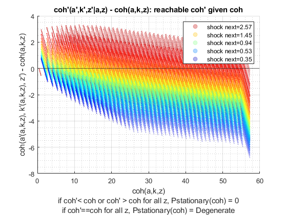
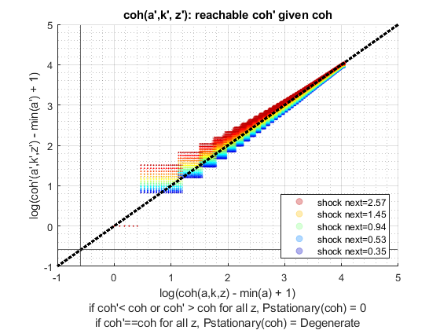

Derive Distributions for Risky + Safe Asets + Interpolated Distribution (Vectorized)
back to Fan's Dynamic Assets Repository Table of Content.
Contents
- FF_IWKZ_DS_VEC finds the stationary asset distributions
- Default
- Parse Parameters
- Start Profiler and Timer
- A. Get Size of Endogenous and Exogenous State
- B. Initialize Output Matrixes
- C. Initialize Convergence Conditions
- D. Solve for Index
- E. Solve for Unique Index
- F. Derive Stationary Distribution
- F1. Iterate over z' Shocks
- F2. Check Tolerance and Continuation
- End Time and Profiler
- f(y), f(c), f(a), f(k): Generate Key Distributional Statistics for Each outcome
function [result_map] = ff_iwkz_ds_vec(varargin)
FF_IWKZ_DS_VEC finds the stationary asset distributions
Building on the Two Assets Two-Step Interpolated Dynamic Programming Problem ff_iwkz_vf_vecsv, here we solve for the asset distribution. This version of the program is vectorized
This is the two-stage with interpolation version of ff_akz_ds_vec. See that file for additional descriptions and comparisons. These two functions are nearly identical
The code here works when we are looking for the distribution of f(a,z), where a'(a,z,z'), meaning that the a next period is determined by a last period and some shock last period as well as shock this period. a here is cash-on-hand. This contrasts with ff_az_ds, which works for a'(a,z), a' can not be a function of z'.
@example
% Get Default Parameters
it_param_set = 6;
[param_map, support_map] = ffs_az_set_default_param(it_param_set);
% Change Keys in param_map
param_map('it_w_n') = 750;
param_map('it_ak_n') = param_map('it_w_n');
param_map('it_z_n') = 11;
param_map('fl_a_max') = 100;
param_map('fl_w') = 1.3;
% Change Keys support_map
support_map('bl_display') = false;
support_map('bl_post') = true;
support_map('bl_display_final') = false;
% Call Program with external parameters that override defaults
ff_iwkz_ds_vec(param_map, support_map);@include
@seealso
- derive distribution f(y'(y,z)) one asset loop: ff_az_ds
- derive distribution f(y'({x,y},z)) two assets loop: ff_akz_ds
- derive distribution f(y'({x,y},z, z')) two assets loop: ff_iwkz_ds
- derive distribution f(y'({y},z)) or f(y'({x,y},z)) vectorized: ff_az_ds_vec
- derive distribution f(y'({y},z, z')) or f(y'({x,y},z, z')) vectorized: ff_iwkz_ds_vec
- derive distribution f(y'({y},z)) or f(y'({x,y},z)) semi-analytical: ff_az_ds_vecsv
- derive distribution f(y'({y},z, z')) or f(y'({x,y},z, z')) semi-analytical: ff_iwkz_ds_vecsv
Default
Program can be externally invoked with az, abz or various other programs. By default, program invokes using az model programs:
- it_subset = 5 is basic invoke quick test
- it_subset = 6 is invoke full test
- it_subset = 7 is profiling invoke
- it_subset = 8 is matlab publish
- it_subset = 9 is invoke operational (only final stats) and coh graph
if (~isempty(varargin)) % if invoked from outside override fully [param_map, support_map, armt_map, func_map, result_map] = varargin{:}; else % default invoke close all; it_param_set = 8; st_akz_or_iwkz = 'iwkz'; % 1. Generate Parameters [param_map, support_map] = ffs_akz_set_default_param(it_param_set); % Note: param_map and support_map can be adjusted here or outside to override defaults % param_map('it_w_n') = 50; % param_map('it_z_n') = 15; % 2. Generate function and grids [armt_map, func_map] = ffs_akz_get_funcgrid(param_map, support_map); % 1 for override % 3. Solve value and policy function using ff_iwkz_vf_vecsv if (strcmp(st_akz_or_iwkz, 'iwkz')) [result_map] = ff_iwkz_vf_vecsv(param_map, support_map, armt_map, func_map); end end
----------------------------------------
----------------------------------------
xxxxxxxxxxxxxxxxxxxxxxxxxxxxxxxxxxxxxxxx
xxxxxxxxxxxxxxxxxxxxxxxxxxxxxxxxxxxxxxxx
Begin: Show all key and value pairs from container
CONTAINER NAME: SUPPORT_MAP
----------------------------------------
Map with properties:
Count: 41
KeyType: char
ValueType: any
xxxxxxxxxxxxxxxxxxxxxxxxxxxxxxxxxxxxxxxx
xxxxxxxxxxxxxxxxxxxxxxxxxxxxxxxxxxxxxxxx
----------------------------------------
----------------------------------------
pos = 1 ; key = bl_display ; val = false
pos = 2 ; key = bl_display_defparam ; val = true
pos = 3 ; key = bl_display_dist ; val = false
pos = 4 ; key = bl_display_evf ; val = false
pos = 5 ; key = bl_display_final ; val = false
pos = 6 ; key = bl_display_final_dist ; val = true
pos = 7 ; key = bl_display_final_dist_detail ; val = true
pos = 8 ; key = bl_display_funcgrids ; val = false
pos = 9 ; key = bl_graph ; val = true
pos = 10 ; key = bl_graph_coh_t_coh ; val = true
pos = 11 ; key = bl_graph_evf ; val = false
pos = 12 ; key = bl_graph_funcgrids ; val = false
pos = 13 ; key = bl_graph_onebyones ; val = true
pos = 14 ; key = bl_graph_pol_lvl ; val = false
pos = 15 ; key = bl_graph_pol_pct ; val = false
pos = 16 ; key = bl_graph_val ; val = false
pos = 17 ; key = bl_img_save ; val = false
pos = 18 ; key = bl_mat ; val = false
pos = 19 ; key = bl_post ; val = true
pos = 20 ; key = bl_profile ; val = false
pos = 21 ; key = bl_profile_dist ; val = false
pos = 22 ; key = bl_time ; val = false
pos = 23 ; key = it_display_every ; val = 20
pos = 24 ; key = it_display_final_colmax ; val = 12
pos = 25 ; key = it_display_final_rowmax ; val = 100
pos = 26 ; key = it_display_summmat_colmax ; val = 7
pos = 27 ; key = it_display_summmat_rowmax ; val = 7
pos = 28 ; key = st_img_name_main ; val = ff_iwkz_vf_vecsv_default
pos = 29 ; key = st_img_path ; val = C:/Users/fan/CodeDynaAsset//m_akz//solve/img/
pos = 30 ; key = st_img_prefix ; val =
pos = 31 ; key = st_img_suffix ; val = _p8.png
pos = 32 ; key = st_mat_name_main ; val = ff_iwkz_vf_vecsv_default
pos = 33 ; key = st_mat_path ; val = C:/Users/fan/CodeDynaAsset//m_akz//solve/mat/
pos = 34 ; key = st_mat_prefix ; val =
pos = 35 ; key = st_mat_suffix ; val = _p8
pos = 36 ; key = st_matimg_path_root ; val = C:/Users/fan/CodeDynaAsset//m_akz/
pos = 37 ; key = st_profile_name_main ; val = ff_iwkz_vf_vecsv_default
pos = 38 ; key = st_profile_path ; val = C:/Users/fan/CodeDynaAsset//m_akz//solve/profile/
pos = 39 ; key = st_profile_prefix ; val =
pos = 40 ; key = st_profile_suffix ; val = _p8
pos = 41 ; key = st_title_prefix ; val =
----------------------------------------
xxxxxxxxxxxxxxxxxxxxxxxxxxxxxxxxxxxxxxxx
Scalars in Container and Sizes and Basic Statistics
xxxxxxxxxxxxxxxxxxxxxxxxxxxxxxxxxxxxxxxx
i idx value
__ ___ _____
bl_display 1 1 0
bl_display_defparam 2 2 1
bl_display_dist 3 3 0
bl_display_evf 4 4 0
bl_display_final 5 5 0
bl_display_final_dist 6 6 1
bl_display_final_dist_detail 7 7 1
bl_display_funcgrids 8 8 0
bl_graph 9 9 1
bl_graph_coh_t_coh 10 10 1
bl_graph_evf 11 11 0
bl_graph_funcgrids 12 12 0
bl_graph_onebyones 13 13 1
bl_graph_pol_lvl 14 14 0
bl_graph_pol_pct 15 15 0
bl_graph_val 16 16 0
bl_img_save 17 17 0
bl_mat 18 18 0
bl_post 19 19 1
bl_profile 20 20 0
bl_profile_dist 21 21 0
bl_time 22 22 0
it_display_every 23 23 20
it_display_final_colmax 24 24 12
it_display_final_rowmax 25 25 100
it_display_summmat_colmax 26 26 7
it_display_summmat_rowmax 27 27 7
----------------------------------------
xxxxxxxxxxxxxxxxxxxxxxxxxxxxxxxxxxxxxxxx
Strings in Container and Sizes and Basic Statistics
xxxxxxxxxxxxxxxxxxxxxxxxxxxxxxxxxxxxxxxx
i idx
__ ___
st_img_name_main 1 28
st_img_path 2 29
st_img_prefix 3 30
st_img_suffix 4 31
st_mat_name_main 5 32
st_mat_path 6 33
st_mat_prefix 7 34
st_mat_suffix 8 35
st_matimg_path_root 9 36
st_profile_name_main 10 37
st_profile_path 11 38
st_profile_prefix 12 39
st_profile_suffix 13 40
st_title_prefix 14 41
----------------------------------------
----------------------------------------
xxxxxxxxxxxxxxxxxxxxxxxxxxxxxxxxxxxxxxxx
xxxxxxxxxxxxxxxxxxxxxxxxxxxxxxxxxxxxxxxx
Begin: Show all key and value pairs from container
CONTAINER NAME: ARMT_MAP
----------------------------------------
Map with properties:
Count: 17
KeyType: char
ValueType: any
xxxxxxxxxxxxxxxxxxxxxxxxxxxxxxxxxxxxxxxx
xxxxxxxxxxxxxxxxxxxxxxxxxxxxxxxxxxxxxxxx
----------------------------------------
----------------------------------------
pos = 1 ; key = ar_a_meshk ;rown= 568 ,coln= 1
ar_a_meshk :mu= 28.8604 ,sd= 16.4498 ,min= 0.44365 ,max= 57.2772
zi_1_c1
_______
zi_1_R1 0.44365
zi_2_R2 0.54388
zi_3_R3 0.64412
zi_284_r284 28.81
zi_566_r566 57.077
zi_567_r567 57.177
zi_568_r568 57.277
pos = 2 ; key = ar_a_mw_wth_na ;rown= 2500 ,coln= 1
ar_a_mw_wth_na :mu= NaN ,sd= NaN ,min= 0 ,max= 50
zi_1_c1
_______
zi_1_R1 0
zi_2_R2 NaN
zi_3_R3 NaN
zi_1250_r1250 NaN
zi_2498_r2498 2.0408
zi_2499_r2499 1.0204
zi_2500_r2500 0
pos = 3 ; key = ar_interp_c_grid ;rown= 1 ,coln= 572761
ar_interp_c_grid :mu= 28.6391 ,sd= 16.5342 ,min= 0.001 ,max= 57.2772
zi_1_C1 zi_2_C2 zi_3_C3 zi_286381_c286381 zi_572759_c572759 zi_572760_c572760 zi_572761_c572761
_______ _______ _______ _________________ _________________ _________________ _________________
zi_1_r1 0.001 0.0011 0.0012 28.639 57.277 57.277 57.277
pos = 4 ; key = ar_interp_coh_grid ;rown= 1 ,coln= 568
ar_interp_coh_grid :mu= 28.8604 ,sd= 16.4498 ,min= 0.44365 ,max= 57.2772
zi_1_C1 zi_2_C2 zi_3_C3 zi_284_c284 zi_566_c566 zi_567_c567 zi_568_c568
_______ _______ _______ ___________ ___________ ___________ ___________
zi_1_r1 0.44365 0.54388 0.64412 28.81 57.077 57.177 57.277
pos = 5 ; key = ar_k ;rown= 1 ,coln= 50
ar_k :mu= 25 ,sd= 14.8749 ,min= 0 ,max= 50
zi_1_C1 zi_2_C2 zi_3_C3 zi_25_c25 zi_48_c48 zi_49_c49 zi_50_c50
_______ _______ _______ _________ _________ _________ _________
zi_1_r1 0 1.0204 2.0408 24.49 47.959 48.98 50
pos = 6 ; key = ar_k_mesha ;rown= 568 ,coln= 1
ar_k_mesha :mu= 0 ,sd= 0 ,min= 0 ,max= 0
zi_1_c1
_______
zi_1_R1 0
zi_2_R2 0
zi_3_R3 0
zi_284_r284 0
zi_566_r566 0
zi_567_r567 0
zi_568_r568 0
pos = 7 ; key = ar_k_mw_wth_na ;rown= 2500 ,coln= 1
ar_k_mw_wth_na :mu= NaN ,sd= NaN ,min= 0 ,max= 50
zi_1_c1
_______
zi_1_R1 0
zi_2_R2 NaN
zi_3_R3 NaN
zi_1250_r1250 NaN
zi_2498_r2498 47.959
zi_2499_r2499 48.98
zi_2500_r2500 50
pos = 8 ; key = ar_stationary ;rown= 1 ,coln= 15
ar_stationary :mu= 0.066667 ,sd= 0.060897 ,min= 0.0027089 ,max= 0.16757
zi_1_C1 zi_2_C2 zi_3_C3 zi_8_C8 zi_13_c13 zi_14_c14 zi_15_c15
_________ _________ ________ _______ _________ _________ _________
zi_1_r1 0.0027089 0.0069499 0.018507 0.16757 0.018507 0.0069499 0.0027089
pos = 9 ; key = ar_w ;rown= 1 ,coln= 50
ar_w :mu= 25 ,sd= 14.8749 ,min= 0 ,max= 50
zi_1_C1 zi_2_C2 zi_3_C3 zi_25_c25 zi_48_c48 zi_49_c49 zi_50_c50
_______ _______ _______ _________ _________ _________ _________
zi_1_r1 0 1.0204 2.0408 24.49 47.959 48.98 50
pos = 10 ; key = ar_z ;rown= 1 ,coln= 15
ar_z :mu= 1.1347 ,sd= 0.69878 ,min= 0.34741 ,max= 2.567
zi_1_C1 zi_2_C2 zi_3_C3 zi_8_C8 zi_13_c13 zi_14_c14 zi_15_c15
_______ _______ _______ _______ _________ _________ _________
zi_1_r1 0.34741 0.40076 0.4623 0.94436 1.9291 2.2253 2.567
pos = 11 ; key = it_ameshk_n ; val = 568
pos = 12 ; key = mt_coh_wkb ;rown= 568 ,coln= 15
mt_coh_wkb :mu= 28.8604 ,sd= 16.4363 ,min= 0.44365 ,max= 57.2772
zi_1_C1 zi_2_C2 zi_3_C3 zi_8_C8 zi_13_c13 zi_14_c14 zi_15_c15
_______ _______ _______ _______ _________ _________ _________
zi_1_R1 0.44365 0.44365 0.44365 0.44365 0.44365 0.44365 0.44365
zi_2_R2 0.54388 0.54388 0.54388 0.54388 0.54388 0.54388 0.54388
zi_3_R3 0.64412 0.64412 0.64412 0.64412 0.64412 0.64412 0.64412
zi_284_r284 28.81 28.81 28.81 28.81 28.81 28.81 28.81
zi_566_r566 57.077 57.077 57.077 57.077 57.077 57.077 57.077
zi_567_r567 57.177 57.177 57.177 57.177 57.177 57.177 57.177
zi_568_r568 57.277 57.277 57.277 57.277 57.277 57.277 57.277
pos = 13 ; key = mt_interp_coh_grid_mesh_z ;rown= 568 ,coln= 15
mt_interp_coh_grid_mesh_z :mu= 28.8604 ,sd= 16.4363 ,min= 0.44365 ,max= 57.2772
zi_1_C1 zi_2_C2 zi_3_C3 zi_8_C8 zi_13_c13 zi_14_c14 zi_15_c15
_______ _______ _______ _______ _________ _________ _________
zi_1_R1 0.44365 0.44365 0.44365 0.44365 0.44365 0.44365 0.44365
zi_2_R2 0.54388 0.54388 0.54388 0.54388 0.54388 0.54388 0.54388
zi_3_R3 0.64412 0.64412 0.64412 0.64412 0.64412 0.64412 0.64412
zi_284_r284 28.81 28.81 28.81 28.81 28.81 28.81 28.81
zi_566_r566 57.077 57.077 57.077 57.077 57.077 57.077 57.077
zi_567_r567 57.177 57.177 57.177 57.177 57.177 57.177 57.177
zi_568_r568 57.277 57.277 57.277 57.277 57.277 57.277 57.277
pos = 14 ; key = mt_k_wth_na ;rown= 50 ,coln= 50
mt_k_wth_na :mu= NaN ,sd= NaN ,min= 0 ,max= 50
zi_1_C1 zi_2_C2 zi_3_C3 zi_25_c25 zi_48_c48 zi_49_c49 zi_50_c50
_______ _______ _______ _________ _________ _________ _________
zi_1_R1 0 0 0 0 0 0 0
zi_2_R2 NaN 1.0204 1.0204 1.0204 1.0204 1.0204 1.0204
zi_3_R3 NaN NaN 2.0408 2.0408 2.0408 2.0408 2.0408
zi_25_r25 NaN NaN NaN 24.49 24.49 24.49 24.49
zi_48_r48 NaN NaN NaN NaN 47.959 47.959 47.959
zi_49_r49 NaN NaN NaN NaN NaN 48.98 48.98
zi_50_r50 NaN NaN NaN NaN NaN NaN 50
pos = 15 ; key = mt_z_mesh_coh_interp_grid ;rown= 568 ,coln= 15
mt_z_mesh_coh_interp_grid :mu= 1.1347 ,sd= 0.67512 ,min= 0.34741 ,max= 2.567
zi_1_C1 zi_2_C2 zi_3_C3 zi_8_C8 zi_13_c13 zi_14_c14 zi_15_c15
_______ _______ _______ _______ _________ _________ _________
zi_1_R1 0.34741 0.40076 0.4623 0.94436 1.9291 2.2253 2.567
zi_2_R2 0.34741 0.40076 0.4623 0.94436 1.9291 2.2253 2.567
zi_3_R3 0.34741 0.40076 0.4623 0.94436 1.9291 2.2253 2.567
zi_284_r284 0.34741 0.40076 0.4623 0.94436 1.9291 2.2253 2.567
zi_566_r566 0.34741 0.40076 0.4623 0.94436 1.9291 2.2253 2.567
zi_567_r567 0.34741 0.40076 0.4623 0.94436 1.9291 2.2253 2.567
zi_568_r568 0.34741 0.40076 0.4623 0.94436 1.9291 2.2253 2.567
pos = 16 ; key = mt_z_mesh_coh_wkb ;rown= 1275 ,coln= 15
mt_z_mesh_coh_wkb :mu= 1.1347 ,sd= 0.6751 ,min= 0.34741 ,max= 2.567
zi_1_C1 zi_2_C2 zi_3_C3 zi_8_C8 zi_13_c13 zi_14_c14 zi_15_c15
_______ _______ _______ _______ _________ _________ _________
zi_1_R1 0.34741 0.40076 0.4623 0.94436 1.9291 2.2253 2.567
zi_2_R2 0.34741 0.40076 0.4623 0.94436 1.9291 2.2253 2.567
zi_3_R3 0.34741 0.40076 0.4623 0.94436 1.9291 2.2253 2.567
zi_638_R638 0.34741 0.40076 0.4623 0.94436 1.9291 2.2253 2.567
zi_1273_r1273 0.34741 0.40076 0.4623 0.94436 1.9291 2.2253 2.567
zi_1274_r1274 0.34741 0.40076 0.4623 0.94436 1.9291 2.2253 2.567
zi_1275_r1275 0.34741 0.40076 0.4623 0.94436 1.9291 2.2253 2.567
pos = 17 ; key = mt_z_trans ;rown= 15 ,coln= 15
mt_z_trans :mu= 0.066667 ,sd= 0.095337 ,min= 0 ,max= 0.27902
zi_1_C1 zi_2_C2 zi_3_C3 zi_8_C8 zi_13_c13 zi_14_c14 zi_15_c15
__________ __________ __________ __________ __________ __________ __________
zi_1_R1 0.26016 0.26831 0.25551 0.00012823 2.7001e-13 1.1102e-15 0
zi_2_R2 0.11232 0.19622 0.2763 0.00098855 1.5289e-11 9.3592e-14 3.3307e-16
zi_3_R3 0.037073 0.10492 0.2185 0.0055558 6.2811e-10 5.7438e-12 3.1863e-14
zi_8_R8 1.7181e-06 4.1008e-05 0.00061112 0.27902 0.00061112 4.1008e-05 1.7181e-06
zi_13_r13 3.1909e-14 5.7438e-12 6.2811e-10 0.0055558 0.2185 0.10492 0.037073
zi_14_r14 3.474e-16 9.3597e-14 1.5289e-11 0.00098855 0.2763 0.19622 0.11232
zi_15_r15 2.7412e-18 1.1057e-15 2.6998e-13 0.00012823 0.25551 0.26831 0.26016
----------------------------------------
xxxxxxxxxxxxxxxxxxxxxxxxxxxxxxxxxxxxxxxx
Matrix in Container and Sizes and Basic Statistics
xxxxxxxxxxxxxxxxxxxxxxxxxxxxxxxxxxxxxxxx
i idx rowN colN mean std min max
__ ___ ____ __________ ________ ________ _________ _______
ar_a_meshk 1 1 568 1 28.86 16.45 0.44365 57.277
ar_a_mw_wth_na 2 2 2500 1 NaN NaN 0 50
ar_interp_c_grid 3 3 1 5.7276e+05 28.639 16.534 0.001 57.277
ar_interp_coh_grid 4 4 1 568 28.86 16.45 0.44365 57.277
ar_k 5 5 1 50 25 14.875 0 50
ar_k_mesha 6 6 568 1 0 0 0 0
ar_k_mw_wth_na 7 7 2500 1 NaN NaN 0 50
ar_stationary 8 8 1 15 0.066667 0.060897 0.0027089 0.16757
ar_w 9 9 1 50 25 14.875 0 50
ar_z 10 10 1 15 1.1347 0.69878 0.34741 2.567
mt_coh_wkb 11 12 568 15 28.86 16.436 0.44365 57.277
mt_interp_coh_grid_mesh_z 12 13 568 15 28.86 16.436 0.44365 57.277
mt_k_wth_na 13 14 50 50 NaN NaN 0 50
mt_z_mesh_coh_interp_grid 14 15 568 15 1.1347 0.67512 0.34741 2.567
mt_z_mesh_coh_wkb 15 16 1275 15 1.1347 0.6751 0.34741 2.567
mt_z_trans 16 17 15 15 0.066667 0.095337 0 0.27902
----------------------------------------
xxxxxxxxxxxxxxxxxxxxxxxxxxxxxxxxxxxxxxxx
Scalars in Container and Sizes and Basic Statistics
xxxxxxxxxxxxxxxxxxxxxxxxxxxxxxxxxxxxxxxx
i idx value
_ ___ _____
it_ameshk_n 1 11 568
----------------------------------------
----------------------------------------
xxxxxxxxxxxxxxxxxxxxxxxxxxxxxxxxxxxxxxxx
xxxxxxxxxxxxxxxxxxxxxxxxxxxxxxxxxxxxxxxx
Begin: Show all key and value pairs from container
CONTAINER NAME: PARAM_MAP
----------------------------------------
Map with properties:
Count: 31
KeyType: char
ValueType: any
xxxxxxxxxxxxxxxxxxxxxxxxxxxxxxxxxxxxxxxx
xxxxxxxxxxxxxxxxxxxxxxxxxxxxxxxxxxxxxxxx
----------------------------------------
----------------------------------------
pos = 1 ; key = bl_default ; val = 0
pos = 2 ; key = fl_Amean ; val = 1
pos = 3 ; key = fl_alpha ; val = 0.36
pos = 4 ; key = fl_b_bd ; val = 0
pos = 5 ; key = fl_beta ; val = 0.94
pos = 6 ; key = fl_c_min ; val = 0.001
pos = 7 ; key = fl_coh_interp_grid_gap ; val = 0.1
pos = 8 ; key = fl_crra ; val = 1.5
pos = 9 ; key = fl_default_aprime ; val = 0
pos = 10 ; key = fl_delta ; val = 0.08
pos = 11 ; key = fl_k_min ; val = 0
pos = 12 ; key = fl_nan_replace ; val = -9999
pos = 13 ; key = fl_r_borr ; val = 0.025
pos = 14 ; key = fl_r_save ; val = 0.025
pos = 15 ; key = fl_tol_dist ; val = 1e-05
pos = 16 ; key = fl_tol_pol ; val = 1e-05
pos = 17 ; key = fl_tol_val ; val = 1e-05
pos = 18 ; key = fl_w ; val = 0.44365
pos = 19 ; key = fl_w_max ; val = 50
pos = 20 ; key = fl_z_mu ; val = 0
pos = 21 ; key = fl_z_rho ; val = 0.8
pos = 22 ; key = fl_z_sig ; val = 0.2
pos = 23 ; key = it_ak_n ; val = 50
pos = 24 ; key = it_c_interp_grid_gap ; val = 0.0001
pos = 25 ; key = it_maxiter_dist ; val = 1000
pos = 26 ; key = it_maxiter_val ; val = 250
pos = 27 ; key = it_tol_pol_nochange ; val = 25
pos = 28 ; key = it_w_n ; val = 50
pos = 29 ; key = it_z_n ; val = 15
pos = 30 ; key = st_analytical_stationary_type ; val = eigenvector
pos = 31 ; key = st_model ; val = akz_wkz_iwkz
----------------------------------------
xxxxxxxxxxxxxxxxxxxxxxxxxxxxxxxxxxxxxxxx
Scalars in Container and Sizes and Basic Statistics
xxxxxxxxxxxxxxxxxxxxxxxxxxxxxxxxxxxxxxxx
i idx value
__ ___ _______
bl_default 1 1 0
fl_Amean 2 2 1
fl_alpha 3 3 0.36
fl_b_bd 4 4 0
fl_beta 5 5 0.94
fl_c_min 6 6 0.001
fl_coh_interp_grid_gap 7 7 0.1
fl_crra 8 8 1.5
fl_default_aprime 9 9 0
fl_delta 10 10 0.08
fl_k_min 11 11 0
fl_nan_replace 12 12 -9999
fl_r_borr 13 13 0.025
fl_r_save 14 14 0.025
fl_tol_dist 15 15 1e-05
fl_tol_pol 16 16 1e-05
fl_tol_val 17 17 1e-05
fl_w 18 18 0.44365
fl_w_max 19 19 50
fl_z_mu 20 20 0
fl_z_rho 21 21 0.8
fl_z_sig 22 22 0.2
it_ak_n 23 23 50
it_c_interp_grid_gap 24 24 0.0001
it_maxiter_dist 25 25 1000
it_maxiter_val 26 26 250
it_tol_pol_nochange 27 27 25
it_w_n 28 28 50
it_z_n 29 29 15
----------------------------------------
xxxxxxxxxxxxxxxxxxxxxxxxxxxxxxxxxxxxxxxx
Strings in Container and Sizes and Basic Statistics
xxxxxxxxxxxxxxxxxxxxxxxxxxxxxxxxxxxxxxxx
i idx
_ ___
st_analytical_stationary_type 1 30
st_model 2 31
----------------------------------------
----------------------------------------
xxxxxxxxxxxxxxxxxxxxxxxxxxxxxxxxxxxxxxxx
xxxxxxxxxxxxxxxxxxxxxxxxxxxxxxxxxxxxxxxx
Begin: Show all key and value pairs from container
CONTAINER NAME: FUNC_MAP
----------------------------------------
Map with properties:
Count: 7
KeyType: char
ValueType: any
xxxxxxxxxxxxxxxxxxxxxxxxxxxxxxxxxxxxxxxx
xxxxxxxxxxxxxxxxxxxxxxxxxxxxxxxxxxxxxxxx
----------------------------------------
----------------------------------------
pos = 1 ; key = f_coh ; val = @(z,b,k)(f_prod(z,k)+k*(1-fl_delta)+fl_w+b.*(1+fl_r_save).*(b>0)+b.*(1+fl_r_borr).*(b<=0))
pos = 2 ; key = f_cons ; val = @(coh,bprime,kprime)(coh-kprime-bprime)
pos = 3 ; key = f_inc ; val = @(z,b,k)(f_prod(z,k)-(fl_delta)*k+fl_w+b.*(fl_r_save).*(b>0)+b.*(fl_r_borr).*(b<=0))
pos = 4 ; key = f_prod ; val = @(z,k)((fl_Amean.*(z)).*(k.^(fl_alpha)))
pos = 5 ; key = f_util_crra ; val = @(c)(((c).^(1-fl_crra)-1)./(1-fl_crra))
pos = 6 ; key = f_util_log ; val = @(c)log(c)
pos = 7 ; key = f_util_standin ; val = @(z,b,k)f_util_log(f_coh(z,b,k).*(f_coh(z,b,k)>0)+fl_c_min.*(f_coh(z,b,k)<=0))
----------------------------------------
xxxxxxxxxxxxxxxxxxxxxxxxxxxxxxxxxxxxxxxx
Scalars in Container and Sizes and Basic Statistics
xxxxxxxxxxxxxxxxxxxxxxxxxxxxxxxxxxxxxxxx
i idx xFunction
_ ___ _________
f_coh 1 1 1
f_cons 2 2 2
f_inc 3 3 3
f_prod 4 4 4
f_util_crra 5 5 5
f_util_log 6 6 6
f_util_standin 7 7 7
----------------------------------------
----------------------------------------
xxxxxxxxxxxxxxxxxxxxxxxxxxxxxxxxxxxxxxxx
xxxxxxxxxxxxxxxxxxxxxxxxxxxxxxxxxxxxxxxx
Begin: Show all key and value pairs from container
CONTAINER NAME: RESULT_MAP
----------------------------------------
Map with properties:
Count: 12
KeyType: char
ValueType: any
xxxxxxxxxxxxxxxxxxxxxxxxxxxxxxxxxxxxxxxx
xxxxxxxxxxxxxxxxxxxxxxxxxxxxxxxxxxxxxxxx
----------------------------------------
----------------------------------------
pos = 1 ; key = ar_pol_diff_norm ;rown= 110 ,coln= 1
ar_pol_diff_norm :mu= 34.0952 ,sd= 167.118 ,min= 0 ,max= 1643.1596
zi_1_c1
_______
zi_1_R1 184.61
zi_2_R2 1643.2
zi_3_R3 546.99
zi_55_R55 1.0204
zi_108_r108 0
zi_109_r109 0
zi_110_r110 0
pos = 2 ; key = ar_st_pol_names ; val = cl_mt_pol_coh cl_mt_pol_a cl_mt_pol_k cl_mt_pol_c
pos = 3 ; key = ar_val_diff_norm ;rown= 110 ,coln= 1
ar_val_diff_norm :mu= 10.7296 ,sd= 23.3812 ,min= 0.041929 ,max= 142.9489
zi_1_c1
________
zi_1_R1 142.95
zi_2_R2 111
zi_3_R3 92.611
zi_55_R55 1.2869
zi_108_r108 0.047454
zi_109_r109 0.044606
zi_110_r110 0.041929
pos = 4 ; key = cl_mt_coh ;rown= 568 ,coln= 15
cl_mt_coh :mu= 30.0256 ,sd= 16.8472 ,min= 0.89839 ,max= 59.1527
zi_1_C1 zi_2_C2 zi_3_C3 zi_8_C8 zi_13_c13 zi_14_c14 zi_15_c15
_______ _______ _______ _______ _________ _________ _________
zi_1_R1 0.89839 0.89839 0.89839 0.89839 0.89839 0.89839 0.89839
zi_2_R2 1.0011 1.0011 1.0011 1.0011 1.0011 1.0011 1.0011
zi_3_R3 1.1039 1.1039 1.1039 1.1039 1.1039 1.1039 1.1039
zi_284_r284 29.974 29.974 29.974 29.974 29.974 29.974 29.974
zi_566_r566 58.947 58.947 58.947 58.947 58.947 58.947 58.947
zi_567_r567 59.05 59.05 59.05 59.05 59.05 59.05 59.05
zi_568_r568 59.153 59.153 59.153 59.153 59.153 59.153 59.153
pos = 5 ; key = cl_mt_cons ;rown= 568 ,coln= 15
cl_mt_cons :mu= 3.6107 ,sd= 1.3536 ,min= 0.024653 ,max= 7.2772
zi_1_C1 zi_2_C2 zi_3_C3 zi_8_C8 zi_13_c13 zi_14_c14 zi_15_c15
_______ _______ _______ _______ _________ _________ _________
zi_1_R1 0.44365 0.44365 0.44365 0.44365 0.44365 0.44365 0.44365
zi_2_R2 0.54388 0.54388 0.54388 0.54388 0.54388 0.54388 0.54388
zi_3_R3 0.64412 0.64412 0.64412 0.64412 0.64412 0.64412 0.64412
zi_284_r284 3.3001 3.3001 3.3001 3.3001 4.3205 4.3205 4.3205
zi_566_r566 7.0767 7.0767 7.0767 7.0767 7.0767 7.0767 7.0767
zi_567_r567 7.1769 7.1769 7.1769 7.1769 7.1769 7.1769 7.1769
zi_568_r568 7.2772 7.2772 7.2772 7.2772 7.2772 7.2772 7.2772
pos = 6 ; key = cl_mt_pol_a ;rown= 568 ,coln= 15
cl_mt_pol_a :mu= 18.0175 ,sd= 14.6604 ,min= 0 ,max= 47.9592
zi_1_C1 zi_2_C2 zi_3_C3 zi_8_C8 zi_13_c13 zi_14_c14 zi_15_c15
_______ _______ _______ _______ _________ _________ _________
zi_1_R1 0 0 0 0 0 0 0
zi_2_R2 0 0 0 0 0 0 0
zi_3_R3 0 0 0 0 0 0 0
zi_284_r284 23.469 23.469 22.449 19.388 9.1837 6.1224 3.0612
zi_566_r566 47.959 47.959 46.939 43.878 34.694 31.633 28.571
zi_567_r567 47.959 47.959 46.939 43.878 34.694 31.633 28.571
zi_568_r568 47.959 47.959 46.939 43.878 34.694 31.633 28.571
pos = 7 ; key = cl_mt_pol_c ;rown= 568 ,coln= 15
cl_mt_pol_c :mu= 3.6107 ,sd= 1.3536 ,min= 0.024653 ,max= 7.2772
zi_1_C1 zi_2_C2 zi_3_C3 zi_8_C8 zi_13_c13 zi_14_c14 zi_15_c15
_______ _______ _______ _______ _________ _________ _________
zi_1_R1 0.44365 0.44365 0.44365 0.44365 0.44365 0.44365 0.44365
zi_2_R2 0.54388 0.54388 0.54388 0.54388 0.54388 0.54388 0.54388
zi_3_R3 0.64412 0.64412 0.64412 0.64412 0.64412 0.64412 0.64412
zi_284_r284 3.3001 3.3001 3.3001 3.3001 4.3205 4.3205 4.3205
zi_566_r566 7.0767 7.0767 7.0767 7.0767 7.0767 7.0767 7.0767
zi_567_r567 7.1769 7.1769 7.1769 7.1769 7.1769 7.1769 7.1769
zi_568_r568 7.2772 7.2772 7.2772 7.2772 7.2772 7.2772 7.2772
pos = 8 ; key = cl_mt_pol_coh ;rown= 568 ,coln= 15
cl_mt_pol_coh :mu= 28.8604 ,sd= 16.4363 ,min= 0.44365 ,max= 57.2772
zi_1_C1 zi_2_C2 zi_3_C3 zi_8_C8 zi_13_c13 zi_14_c14 zi_15_c15
_______ _______ _______ _______ _________ _________ _________
zi_1_R1 0.44365 0.44365 0.44365 0.44365 0.44365 0.44365 0.44365
zi_2_R2 0.54388 0.54388 0.54388 0.54388 0.54388 0.54388 0.54388
zi_3_R3 0.64412 0.64412 0.64412 0.64412 0.64412 0.64412 0.64412
zi_284_r284 28.81 28.81 28.81 28.81 28.81 28.81 28.81
zi_566_r566 57.077 57.077 57.077 57.077 57.077 57.077 57.077
zi_567_r567 57.177 57.177 57.177 57.177 57.177 57.177 57.177
zi_568_r568 57.277 57.277 57.277 57.277 57.277 57.277 57.277
pos = 9 ; key = cl_mt_pol_k ;rown= 568 ,coln= 15
cl_mt_pol_k :mu= 7.2322 ,sd= 5.5189 ,min= 0 ,max= 22.449
zi_1_C1 zi_2_C2 zi_3_C3 zi_8_C8 zi_13_c13 zi_14_c14 zi_15_c15
_______ _______ _______ _______ _________ _________ _________
zi_1_R1 0 0 0 0 0 0 0
zi_2_R2 0 0 0 0 0 0 0
zi_3_R3 0 0 0 0 0 0 0
zi_284_r284 2.0408 2.0408 3.0612 6.1224 15.306 18.367 21.429
zi_566_r566 2.0408 2.0408 3.0612 6.1224 15.306 18.367 21.429
zi_567_r567 2.0408 2.0408 3.0612 6.1224 15.306 18.367 21.429
zi_568_r568 2.0408 2.0408 3.0612 6.1224 15.306 18.367 21.429
pos = 10 ; key = mt_pol_idx ;rown= 568 ,coln= 15
mt_pol_idx :mu= 25.7447 ,sd= 14.8708 ,min= 1 ,max= 50
zi_1_C1 zi_2_C2 zi_3_C3 zi_8_C8 zi_13_c13 zi_14_c14 zi_15_c15
_______ _______ _______ _______ _________ _________ _________
zi_1_R1 1 1 1 1 1 1 1
zi_2_R2 1 1 1 1 1 1 1
zi_3_R3 1 1 1 1 1 1 1
zi_284_r284 26 26 26 26 25 25 25
zi_566_r566 50 50 50 50 50 50 50
zi_567_r567 50 50 50 50 50 50 50
zi_568_r568 50 50 50 50 50 50 50
pos = 11 ; key = mt_pol_perc_change ;rown= 110 ,coln= 15
mt_pol_perc_change :mu= 0.054135 ,sd= 0.15854 ,min= 0 ,max= 1
zi_1_C1 zi_2_C2 zi_3_C3 zi_8_C8 zi_13_c13 zi_14_c14 zi_15_c15
_______ _______ _______ __________ __________ __________ _________
zi_1_R1 1 1 1 1 1 1 1
zi_2_R2 0.9419 0.94102 0.92165 0.86092 0.67958 0.6206 0.55986
zi_3_R3 0.64789 0.64789 0.51408 0.57746 0.5713 0.53169 0.54577
zi_55_R55 0 0 0 0.00088028 0.00088028 0.00088028 0
zi_108_r108 0 0 0 0 0 0 0
zi_109_r109 0 0 0 0 0 0 0
zi_110_r110 0 0 0 0 0 0 0
pos = 12 ; key = mt_val ;rown= 568 ,coln= 15
mt_val :mu= 11.9863 ,sd= 4.2293 ,min= -16.6941 ,max= 16.6028
zi_1_C1 zi_2_C2 zi_3_C3 zi_8_C8 zi_13_c13 zi_14_c14 zi_15_c15
_______ _______ _______ _______ _________ _________ _________
zi_1_R1 -16.694 -16.694 -16.694 -16.694 -16.694 -16.694 -16.694
zi_2_R2 -16.403 -16.403 -16.403 -16.403 -16.403 -16.403 -16.403
zi_3_R3 -16.183 -16.183 -16.183 -16.183 -16.183 -16.183 -16.183
zi_284_r284 12.123 12.198 12.284 12.85 13.689 13.889 14.084
zi_566_r566 15.412 15.455 15.505 15.841 16.35 16.473 16.592
zi_567_r567 15.417 15.46 15.51 15.847 16.355 16.478 16.598
zi_568_r568 15.422 15.465 15.516 15.852 16.361 16.483 16.603
----------------------------------------
xxxxxxxxxxxxxxxxxxxxxxxxxxxxxxxxxxxxxxxx
Matrix in Container and Sizes and Basic Statistics
xxxxxxxxxxxxxxxxxxxxxxxxxxxxxxxxxxxxxxxx
i idx rowN colN mean std min max
__ ___ ____ ____ ________ _______ ________ ______
ar_pol_diff_norm 1 1 110 1 34.095 167.12 0 1643.2
ar_val_diff_norm 2 3 110 1 10.73 23.381 0.041929 142.95
cl_mt_coh 3 4 568 15 30.026 16.847 0.89839 59.153
cl_mt_cons 4 5 568 15 3.6107 1.3536 0.024653 7.2772
cl_mt_pol_a 5 6 568 15 18.018 14.66 0 47.959
cl_mt_pol_c 6 7 568 15 3.6107 1.3536 0.024653 7.2772
cl_mt_pol_coh 7 8 568 15 28.86 16.436 0.44365 57.277
cl_mt_pol_k 8 9 568 15 7.2322 5.5189 0 22.449
mt_pol_idx 9 10 568 15 25.745 14.871 1 50
mt_pol_perc_change 10 11 110 15 0.054135 0.15854 0 1
mt_val 11 12 568 15 11.986 4.2293 -16.694 16.603
----------------------------------------
xxxxxxxxxxxxxxxxxxxxxxxxxxxxxxxxxxxxxxxx
Strings in Container and Sizes and Basic Statistics
xxxxxxxxxxxxxxxxxxxxxxxxxxxxxxxxxxxxxxxx
i idx
_ ___
ar_st_pol_names 1 2
  Parse Parameters
% append function name st_func_name = 'ff_iwkz_ds_vec'; support_map('st_profile_name_main') = [st_func_name support_map('st_profile_name_main')]; support_map('st_mat_name_main') = [st_func_name support_map('st_mat_name_main')]; support_map('st_img_name_main') = [st_func_name support_map('st_img_name_main')]; % result_map % ar_st_pol_names is from section _Process Optimal Choices_ in the value % function code. params_group = values(result_map, {'cl_mt_pol_a', 'cl_mt_pol_k'}); [cl_mt_pol_a, cl_mt_pol_k] = params_group{:}; [mt_pol_a, mt_pol_k] = deal(cl_mt_pol_a{1}, cl_mt_pol_k{1}); % func_map params_group = values(func_map, {'f_coh'}); [f_coh] = params_group{:}; % armt_map params_group = values(armt_map, {'mt_z_trans', 'ar_z'}); [mt_z_trans, ar_z] = params_group{:}; params_group = values(armt_map, {'ar_interp_coh_grid'}); [ar_interp_coh_grid] = params_group{:}; % param_map params_group = values(param_map, {'it_z_n', 'it_maxiter_dist', 'fl_tol_dist'}); [it_z_n, it_maxiter_dist, fl_tol_dist] = params_group{:}; % support_map params_group = values(support_map, {'bl_profile_dist', 'st_profile_path', ... 'st_profile_prefix', 'st_profile_name_main', 'st_profile_suffix',... 'bl_time', 'bl_display_dist', 'it_display_every'}); [bl_profile_dist, st_profile_path, ... st_profile_prefix, st_profile_name_main, st_profile_suffix, ... bl_time, bl_display_dist, it_display_every] = params_group{:};
Start Profiler and Timer
% Start Profile if (bl_profile_dist) close all; profile off; profile on; end % Start Timer if (bl_time) tic; end
A. Get Size of Endogenous and Exogenous State
it_endostates_n = length(ar_interp_coh_grid); it_exostates_n = length(ar_z);
B. Initialize Output Matrixes
Initialize the distribution to be uniform
mt_dist_akz_init = ones(it_endostates_n,it_exostates_n)/it_endostates_n/it_exostates_n; mt_dist_akz_cur = mt_dist_akz_init; mt_dist_akz_zeros = zeros(it_endostates_n,it_exostates_n);
C. Initialize Convergence Conditions
bl_histiter_continue = true; it_iter = 0; ar_dist_diff_norm = zeros([it_maxiter_dist, 1]); mt_dist_perc_change = zeros([it_maxiter_dist, it_z_n]);
D. Solve for Index
The model is solved by interpolating over cash-on-hand. The optimal choices do not map to specific points on the cash-on-hand grid. Find the index of the cash-on-hand vector that is the closest to the coh'(a'(coh,z),k'(coh,z),z').
Since we have z_n elements of shocks, and coh_n elements of the cash-on-hand grid, there are (coh_n x z_n) possible combinations of states at period t. In period t+1, there are (coh_n x z_n) by (z_n) possible/reachable cash-on-hand points. We find the index of all these reachable coh' points on the interpolation cash-on-hand grid.
% 1. *mt_coh_prime* is (coh_n x z_n) by (z_n) % coh'(z', a'(coh,z), k'(coh,z)) mt_coh_prime = f_coh(ar_z, mt_pol_a(:), mt_pol_k(:)); % 2. *mt_coh_prime_on_grid_idx* is (coh_n x z_n) by (z_n): % index for coh'(a,k,z') [~, ar_coh_prime_on_grid_idx] = min(abs(mt_coh_prime(:)' - ar_interp_coh_grid')); mt_coh_prime_on_grid_idx = reshape(ar_coh_prime_on_grid_idx, size(mt_coh_prime));
E. Solve for Unique Index
For each z', there are (coh_n x z_n) possible coh'(z') reachable points, which have been converted to index: mt_coh_prime_on_grid_idx along the cash-on-hand grid in the previous code segment. Now, we find the number of unique coh' grid points among the (coh_n x z_n) grid indexes: ar_idx_of_unique. We also find the positions of these unique indexes in the full (coh_n x z_n) grid: ar_idx_full
cl_ar_idx_full = cell([it_exostates_n, 1]); cl_ar_idx_of_unique = cell([it_exostates_n, 1]); for it_z_i = 1:it_exostates_n % 5. Cumulative probability received at state from zi [ar_idx_full, ~, ar_idx_of_unique] = unique(mt_coh_prime_on_grid_idx(:, it_z_i)); cl_ar_idx_full{it_z_i} = ar_idx_full; cl_ar_idx_of_unique{it_z_i} = ar_idx_of_unique; end
F. Derive Stationary Distribution
Iterate until convergence
while (bl_histiter_continue)
it_iter = it_iter + 1;
F1. Iterate over z' Shocks
The code below loops over future states, note that the structure here is significant different from ff_akz_ds, where we looped over current shocks. Here we loop over future shocks because coh' is a function of z' as well as choices last period.
% 1. initialize empty mt_dist_akz = mt_dist_akz_zeros; % 2. loop over next period exo shocks for it_z_i = 1:it_exostates_n % 3. *ar_zi_prob* is (coh_n x z_n) by (1): % mt_z_trans(:, it_z_i)': for all z today, prob(z'|z) fixing z' % overall: f(coh,z)*f(z'|z) fixing z' for all z mt_zi_prob = mt_dist_akz_cur .* mt_z_trans(:,it_z_i)'; ar_zi_prob = mt_zi_prob(:); % 4. Cumulative probability received at state from zi mt_zi_cumu_prob = accumarray(cl_ar_idx_of_unique{it_z_i}, ar_zi_prob); % 5. Adding up mt_dist_akz(cl_ar_idx_full{it_z_i}, it_z_i) = mt_zi_cumu_prob + mt_dist_akz(cl_ar_idx_full{it_z_i}, it_z_i); end
F2. Check Tolerance and Continuation
% Difference across iterations ar_dist_diff_norm(it_iter) = norm(mt_dist_akz - mt_dist_akz_cur); mt_dist_perc_change(it_iter, :) = sum((mt_dist_akz ~= mt_dist_akz))/it_endostates_n; % Update mt_dist_akz_cur = mt_dist_akz; % Print Iteration Results if (bl_display_dist && (rem(it_iter, it_display_every)==0)) fprintf('Dist it_iter:%d, fl_dist_diff:%d\n', it_iter, ar_dist_diff_norm(it_iter)); tb_hist_iter = array2table([sum(mt_dist_akz_cur,1); std(mt_dist_akz_cur,1); ... mt_dist_akz_cur(1,:); mt_dist_akz_cur(it_endostates_n,:)]); tb_hist_iter.Properties.VariableNames = strcat('z', string((1:size(mt_dist_akz,2)))); tb_hist_iter.Properties.RowNames = {'mdist','sddist', 'Ldist', 'Hdist'}; disp('mdist = sum(mt_dist_akz_cur,1) = sum_{a,k}(p({a,k})|z)') disp('sddist = std(mt_pol_ak_cur,1) = std_{a,k}(p({a,k})|z)') disp('Ldist = mt_dist_akz_cur(1,:) = p(min({a,k})|z)') disp('Hdist = mt_dist_akz_cur(it_a_n,:) = p(max({a,k})|z)') disp(tb_hist_iter); end % Continuation Conditions: if (it_iter == (it_maxiter_dist + 1)) bl_histiter_continue = false; elseif ((it_iter == it_maxiter_dist) || ... (ar_dist_diff_norm(it_iter) < fl_tol_dist)) it_iter_last = it_iter; it_iter = it_maxiter_dist; end
end
End Time and Profiler
% End Timer if (bl_time) toc; end % End Profile if (bl_profile_dist) profile off profile viewer st_file_name = [st_profile_prefix st_profile_name_main st_profile_suffix]; profsave(profile('info'), strcat(st_profile_path, st_file_name)); end
f(y), f(c), f(a), f(k): Generate Key Distributional Statistics for Each outcome
Having derived f({a,k},z) the probability mass function of the joint discrete random variables, we now obtain distributional statistics. Note that we know f({a,k},z), and we also know relevant policy functions a'(a,k,z), k'(a,k,z), or other policy functions. We can simulate any choices that are a function of the random variables (coh(a,k),z), using f(coh(a,k),z). We call function ff_az_ds_post_stats which uses fft_disc_rand_var_stats and fft_disc_rand_var_mass2outcomes to compute various statistics of interest.
result_map = ff_az_ds_post_stats(support_map, result_map, mt_dist_akz);
----------------------------------------
xxxxxxxxxxxxxxxxxxxxxxxxxxxxxxxxxxxxxxxx
Summary Statistics for: cl_mt_pol_coh
xxxxxxxxxxxxxxxxxxxxxxxxxxxxxxxxxxxxxxxx
----------------------------------------
fl_choice_mean
6.6350
fl_choice_sd
3.1472
fl_choice_coefofvar
0.4743
fl_choice_prob_zero
0
fl_choice_prob_below_zero
0
fl_choice_prob_above_zero
1.0000
fl_choice_prob_max
0
tb_disc_cumu
cl_mt_pol_cohDiscreteVal cl_mt_pol_cohDiscreteValProbMass CDF cumsumFrac
________________________ ________________________________ ______ __________
0.44365 0.010563 1.0563 0.00070632
0.54388 0 1.0563 0.00070632
0.64412 0 1.0563 0.00070632
0.74435 0 1.0563 0.00070632
0.84459 0 1.0563 0.00070632
0.94483 0 1.0563 0.00070632
1.0451 0 1.0563 0.00070632
1.1453 0 1.0563 0.00070632
1.2455 0 1.0563 0.00070632
1.3458 0 1.0563 0.00070632
cl_mt_pol_cohDiscreteVal cl_mt_pol_cohDiscreteValProbMass CDF cumsumFrac
________________________ ________________________________ ___ __________
56.375 0 100 1
56.475 0 100 1
56.576 0 100 1
56.676 0 100 1
56.776 0 100 1
56.876 0 100 1
56.976 3.9823e-13 100 1
57.077 1.0205e-12 100 1
57.177 5.9749e-12 100 1
57.277 0 100 1
tb_prob_drv
percentiles cl_mt_pol_cohDiscreteValPercentileValues fracOfSumHeldBelowThisPercentile
___________ ________________________________________ ________________________________
0.1 0.44365 0.00070632
1 0.44365 0.00070632
5 3.2502 0.022288
10 3.7514 0.045512
15 4.1524 0.086704
20 4.3528 0.11199
25 4.6535 0.16932
35 5.1547 0.21498
50 5.7561 0.34178
65 6.8587 0.50581
75 7.6606 0.59072
80 8.1618 0.65133
85 9.2644 0.72317
90 10.668 0.79505
95 13.174 0.88519
99 17.985 0.96997
99.9 24.701 0.99642
----------------------------------------
xxxxxxxxxxxxxxxxxxxxxxxxxxxxxxxxxxxxxxxx
Summary Statistics for: cl_mt_pol_a
xxxxxxxxxxxxxxxxxxxxxxxxxxxxxxxxxxxxxxxx
----------------------------------------
fl_choice_mean
0.3058
fl_choice_sd
1.1327
fl_choice_coefofvar
3.7047
fl_choice_prob_zero
0.8828
fl_choice_prob_below_zero
0
fl_choice_prob_above_zero
0.1172
fl_choice_prob_max
0
tb_disc_cumu
cl_mt_pol_aDiscreteVal cl_mt_pol_aDiscreteValProbMass CDF cumsumFrac
______________________ ______________________________ ______ __________
0 0.88283 88.283 0
1.0204 0.0051213 88.795 0.017091
1.0204 0.02935 91.73 0.11504
1.0204 0.0038709 92.117 0.12796
1.0204 0.013456 93.463 0.17287
1.0204 2.1193e-05 93.465 0.17294
2.0408 5.0286e-05 93.47 0.17327
2.0408 0.0078633 94.256 0.22576
2.0408 0.0016302 94.419 0.23664
2.0408 0.014069 95.826 0.33054
cl_mt_pol_aDiscreteVal cl_mt_pol_aDiscreteValProbMass CDF cumsumFrac
______________________ ______________________________ ___ __________
41.837 1.2612e-13 100 1
42.857 5.4603e-16 100 1
42.857 4.5359e-18 100 1
43.878 4.8574e-19 100 1
44.898 0 100 1
44.898 0 100 1
45.918 0 100 1
45.918 0 100 1
46.939 0 100 1
47.959 0 100 1
tb_prob_drv
percentiles cl_mt_pol_aDiscreteValPercentileValues fracOfSumHeldBelowThisPercentile
___________ ______________________________________ ________________________________
0.1 0 0
1 0 0
5 0 0
10 0 0
15 0 0
20 0 0
25 0 0
35 0 0
50 0 0
65 0 0
75 0 0
80 0 0
85 0 0
90 1.0204 0.11504
95 2.0408 0.33054
99 6.1224 0.75805
99.9 11.224 0.9602
----------------------------------------
xxxxxxxxxxxxxxxxxxxxxxxxxxxxxxxxxxxxxxxx
Summary Statistics for: cl_mt_pol_k
xxxxxxxxxxxxxxxxxxxxxxxxxxxxxxxxxxxxxxxx
----------------------------------------
fl_choice_mean
4.5281
fl_choice_sd
2.1664
fl_choice_coefofvar
0.4784
fl_choice_prob_zero
0.0106
fl_choice_prob_below_zero
0
fl_choice_prob_above_zero
0.9894
fl_choice_prob_max
9.0646e-08
tb_disc_cumu
cl_mt_pol_kDiscreteVal cl_mt_pol_kDiscreteValProbMass CDF cumsumFrac
______________________ ______________________________ ______ __________
0 0.010563 1.0563 0
1.0204 9.7408e-07 1.0564 2.1951e-07
2.0408 1.3578e-11 1.0564 2.1952e-07
2.0408 7.8984e-05 1.0643 3.5818e-05
2.0408 0.10029 11.094 0.045238
2.0408 0.00011735 11.105 0.045291
2.0408 1.4899e-07 11.105 0.045291
3.0612 0.00047808 11.153 0.045614
3.0612 0.24602 35.755 0.21194
3.0612 0.00083722 35.839 0.2125
cl_mt_pol_kDiscreteVal cl_mt_pol_kDiscreteValProbMass CDF cumsumFrac
______________________ ______________________________ ______ __________
14.286 0.0010657 99.688 0.9887
15.306 0.0018811 99.876 0.99506
15.306 1.3953e-06 99.876 0.99506
16.327 0.00031013 99.907 0.99618
17.347 0.00026805 99.934 0.99721
18.367 0.00046971 99.981 0.99911
19.388 5.3677e-05 99.986 0.99934
20.408 4.3832e-05 99.99 0.99954
21.429 9.6646e-05 100 1
22.449 9.0646e-08 100 1
tb_prob_drv
percentiles cl_mt_pol_kDiscreteValPercentileValues fracOfSumHeldBelowThisPercentile
___________ ______________________________________ ________________________________
0.1 0 0
1 0 0
5 2.0408 0.045238
10 2.0408 0.045238
15 3.0612 0.21194
20 3.0612 0.21194
25 3.0612 0.21194
35 3.0612 0.21194
50 4.0816 0.45126
65 5.102 0.64408
75 5.102 0.64408
80 6.1224 0.75752
85 6.1224 0.75752
90 7.1429 0.81493
95 9.1837 0.91764
99 12.245 0.97389
99.9 16.327 0.99618
----------------------------------------
xxxxxxxxxxxxxxxxxxxxxxxxxxxxxxxxxxxxxxxx
Summary Statistics for: cl_mt_pol_c
xxxxxxxxxxxxxxxxxxxxxxxxxxxxxxxxxxxxxxxx
----------------------------------------
fl_choice_mean
1.8012
fl_choice_sd
0.5588
fl_choice_coefofvar
0.3103
fl_choice_prob_zero
0
fl_choice_prob_below_zero
0
fl_choice_prob_above_zero
1.0000
fl_choice_prob_max
0
tb_disc_cumu
cl_mt_pol_cDiscreteVal cl_mt_pol_cDiscreteValProbMass CDF cumsumFrac
______________________ ______________________________ ______ __________
0.024653 0 0 0
0.12489 0 0 0
0.22512 0 0 0
0.32536 0 0 0
0.42559 0 0 0
0.44365 0.010563 1.0563 0.0026018
0.50778 0 1.0563 0.0026018
0.52583 0 1.0563 0.0026018
0.54388 0 1.0563 0.0026018
0.60801 5.9137e-08 1.0563 0.0026018
cl_mt_pol_cDiscreteVal cl_mt_pol_cDiscreteValProbMass CDF cumsumFrac
______________________ ______________________________ ___ __________
6.8762 0 100 1
6.8762 0 100 1
6.9764 0 100 1
6.9764 3.9823e-13 100 1
7.0767 1.0205e-12 100 1
7.0767 0 100 1
7.1769 0 100 1
7.1769 5.9749e-12 100 1
7.2772 0 100 1
7.2772 0 100 1
tb_prob_drv
percentiles cl_mt_pol_cDiscreteValPercentileValues fracOfSumHeldBelowThisPercentile
___________ ______________________________________ ________________________________
0.1 0.44365 0.0026018
1 0.44365 0.0026018
5 1.009 0.026023
10 1.1733 0.065093
15 1.2736 0.098025
20 1.2916 0.12565
25 1.3918 0.18942
35 1.5382 0.2474
50 1.7567 0.39882
65 1.9571 0.5379
75 2.1757 0.68582
80 2.2579 0.72548
85 2.4222 0.78094
90 2.5405 0.84178
95 2.8051 0.91426
99 3.2982 0.98041
99.9 3.9195 0.99768
OriginalVariableNames cl_mt_pol_coh cl_mt_pol_a cl_mt_pol_k cl_mt_pol_c
______________________ _____________ ___________ ___________ ___________
'mean' 6.635 0.30576 4.5281 1.8012
'sd' 3.1472 1.1327 2.1664 0.55884
'coefofvar' 0.47433 3.7047 0.47844 0.31026
'min' 0.44365 0 0 0.024653
'max' 57.277 47.959 22.449 7.2772
'pYis0' 0 0.88283 0.010563 0
'pYls0' 0 0 0 0
'pYgr0' 1 0.11717 0.98944 1
'pYisMINY' 0.010563 0.88283 0.010563 0
'pYisMAXY' 0 0 9.0646e-08 0
'p0_1' 0.44365 0 0 0.44365
'p1' 0.44365 0 0 0.44365
'p5' 3.2502 0 2.0408 1.009
'p10' 3.7514 0 2.0408 1.1733
'p15' 4.1524 0 3.0612 1.2736
'p20' 4.3528 0 3.0612 1.2916
'p25' 4.6535 0 3.0612 1.3918
'p35' 5.1547 0 3.0612 1.5382
'p50' 5.7561 0 4.0816 1.7567
'p65' 6.8587 0 5.102 1.9571
'p75' 7.6606 0 5.102 2.1757
'p80' 8.1618 0 6.1224 2.2579
'p85' 9.2644 0 6.1224 2.4222
'p90' 10.668 1.0204 7.1429 2.5405
'p95' 13.174 2.0408 9.1837 2.8051
'p99' 17.985 6.1224 12.245 3.2982
'p99_9' 24.701 11.224 16.327 3.9195
'fl_cov_cl_mt_pol_coh' 9.9047 2.1905 6.2606 1.4536
'fl_cor_cl_mt_pol_coh' 1 0.61446 0.91823 0.82651
'fl_cov_cl_mt_pol_a' 2.1905 1.2831 0.66664 0.24077
'fl_cor_cl_mt_pol_a' 0.61446 1 0.27165 0.38035
'fl_cov_cl_mt_pol_k' 6.2606 0.66664 4.6934 0.90058
'fl_cor_cl_mt_pol_k' 0.91823 0.27165 1 0.74386
'fl_cov_cl_mt_pol_c' 1.4536 0.24077 0.90058 0.3123
'fl_cor_cl_mt_pol_c' 0.82651 0.38035 0.74386 1
'fracByP0_1' 0.00070632 0 0 0.0026018
'fracByP1' 0.00070632 0 0 0.0026018
'fracByP5' 0.022288 0 0.045238 0.026023
'fracByP10' 0.045512 0 0.045238 0.065093
'fracByP15' 0.086704 0 0.21194 0.098025
'fracByP20' 0.11199 0 0.21194 0.12565
'fracByP25' 0.16932 0 0.21194 0.18942
'fracByP35' 0.21498 0 0.21194 0.2474
'fracByP50' 0.34178 0 0.45126 0.39882
'fracByP65' 0.50581 0 0.64408 0.5379
'fracByP75' 0.59072 0 0.64408 0.68582
'fracByP80' 0.65133 0 0.75752 0.72548
'fracByP85' 0.72317 0 0.75752 0.78094
'fracByP90' 0.79505 0.11504 0.81493 0.84178
'fracByP95' 0.88519 0.33054 0.91764 0.91426
'fracByP99' 0.96997 0.75805 0.97389 0.98041
'fracByP99_9' 0.99642 0.9602 0.99618 0.99768
end
ans =
Map with properties:
Count: 14
KeyType: char
ValueType: any